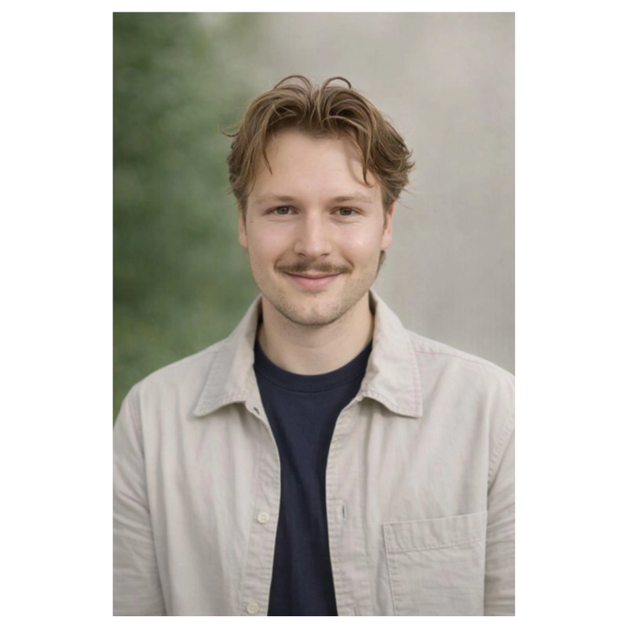
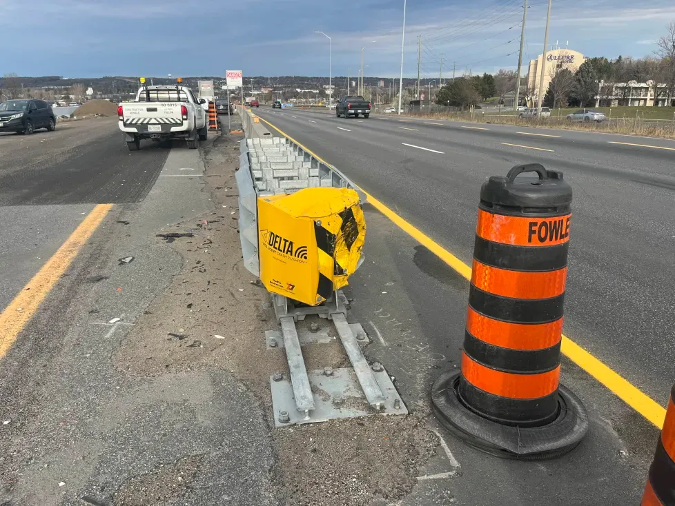
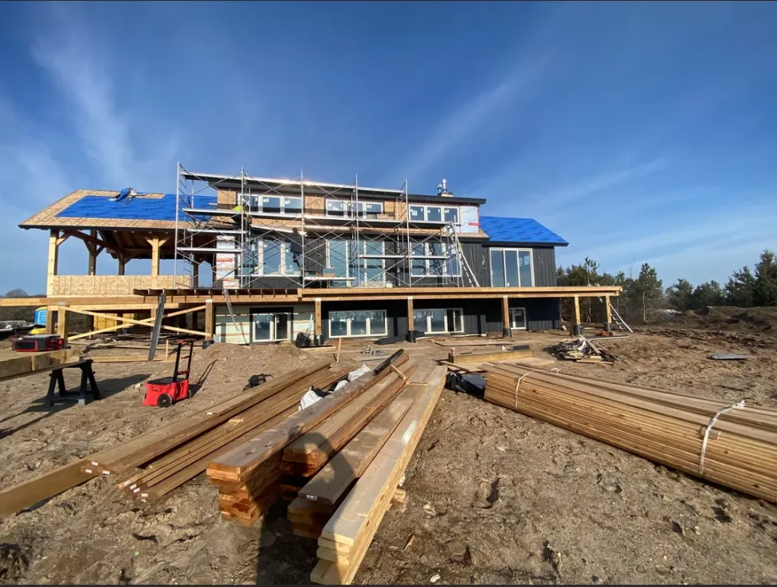
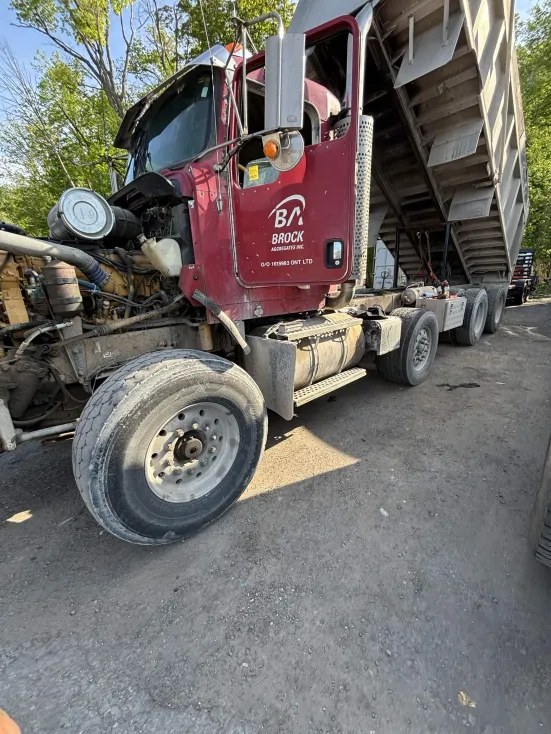

Field Experience · Infrastructure Coordination · Technical Prototyping
Civil engineering graduate building infrastructure tools — from MTO roadway coordination to a truck-mounted axle-weight monitoring system.
I'm a civil engineering graduate with 5+ years in construction, from hands-on labourer to project coordination on Ontario roadway infrastructure. I know how things get built from the ground up, and I'm now moving toward design — with a long-term goal of earning my P.Eng.
Alongside that, I build technical tools to solve problems I've seen on site. My current project is a truck-mounted axle-weight monitoring prototype that combines sensors, vehicle electronics, control hardware, and a live dashboard.
- Location
- Barrie, Ontario
- Degree
- BEng Civil Engineering, 2026
- Available for
- Civil, field & project coordination, infrastructure design

Danylo Kostiv — Barrie, Ontario
Selected work
Experience
Project Coordinator — Powell Contracting
May – Dec 2024Co-op · Aurora, Ontario · Ontario roadway infrastructure
- {{ b }}

Labourer — JBC Construction
2021–2023 · 2025Barrie, Ontario · Residential construction and renovation

- {{ b }}
Personal engineering project · SPIFF Module
Truck axle-weight monitoring prototype
A truck-mounted prototype for dump trucks that estimates per-axle loading by combining calibrated air-suspension pressure measurements with custom-designed and machined strain-gauge load cells. The sensing configuration is modular — the combination of sensors varies by truck type and suspension layout. Aimed at a lower-cost, more capable alternative to existing OEM axle-weight units, with real-time display, logging, and alerts. Developed and tested on a 2006 Kenworth T800.
Read the full case study →
- Role
- Software & computer engineering — designing the software, computer hardware, and circuits
- Vehicle
- 2006 Kenworth T800 dump truck
- Status
- Prototype development and field calibration
- Platform
- Raspberry Pi 5, ADS1115, 12V vehicle interface
- Period
- May 2026 – present
Engineering objective
Estimate axle loading in real time and automatically actuate the lift axle based on measured axle weights to keep the truck within Ontario MTO axle-load limits, with logging and a live operator display.
Design constraints
System architecture
A set of analog and digital sensors connects to a Raspberry Pi running Linux. It processes the readings, then drives the operator display and the isolated lift-axle control.
{{ a.group }}
- {{ it }}
Hardware
Software dashboard
Development build of the operator dashboard. The large readout is the live lift-axle weight, estimated by fusing air-suspension pressure with strain-gauge data. The right column tracks airbag pressure and each axle's load against its legal limit, while the panels along the bottom report ignition, lift-solenoid, interlock, and sensor-health status alongside a live weight trend.
Wiring diagram
View full wiring diagram →12V input, TVS and buck protection, ignition latch, opto-isolated inputs, and relay outputs
Completed
- ✓{{ s }}
In progress
- ·{{ s }}
Limitations
Readings are engineering estimates derived from calibration and can be affected by temperature, suspension geometry, hysteresis, and mounting conditions. The system is being developed toward certification for use on public roads, with ongoing work on calibration accuracy, environmental reliability, and safe lift-axle actuation.
Education & technical skills
2026
BEng Civil Engineering
York University — Lassonde School of Engineering
{{ grp.cat }}
{{ grp.context }}